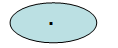
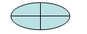
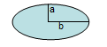
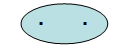
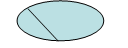
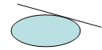
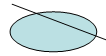

An ellipse looks like a circle that has been squashed into an oval. Like a circle, an ellipse is a type of line. Imagine a straight line segment that is bent around until its ends join. Then shape that loop until it is an ellipse - a sort of 'squashed circle' like the one above. Things that are in the shape of an ellipse are said to be 'elliptical'.
An ellipse is defined by two points, each called a focus. (F1, F2 above). If you take any point on the ellipse, the sum of the distances to the focus points is constant. In the figure above, drag the point on the ellipse around and see that while the distances to the focus points vary, their sum is constant. The size of the ellipse is determined by the sum of these two distances. The sum of these distances is equal to the length of the major axis (the longest diameter of the ellipse).
The two lines a and b that define the ellipse are called generator lines. Each one is sometimes called a generatrix.
The position of the foci (plural of focus, pronounced 'foe-sigh') determine how 'squashed' the ellipse is. Drag F1 and F2 and see how this happens. If they are at the same location, the ellipse is a circle. A circle is, in fact, a special case of an ellipse. In the figure above, drag one focus until it is over the other.
| Center | A point inside the ellipse which is the midpoint of the line segment linking the two foci. The intersection of the major and minor axes. |
 |
| Major / minor axis | The longest and shortest diameters of an ellipse. See Major / Minor Axis of an Ellipse. The length of the major axis is equal to the sum of the two generator lines (a and b in the diagram above). |
 |
| Semi-major / semi-minor axis | The distance from the center to the furthest and closest point on the ellipse. Half the major / minor axis. See Semi-major/ Semi-minor axis of an ellipse. |
 |
| Foci (Focus points) | The two points that define the ellipse. See Foci of an ellipse. |
 |
| Perimeter (circumference) | The perimeter is the distance around the ellipse. Not easy to calculate. See Perimeter of an ellipse. | |
| Area | The number of square units it takes to fill the region inside an ellipse. See Area enclosed by an ellipse . | |
| Chord | A line segment linking any two points on an ellipse. |
 |
| Tangent | A line passing an ellipse and touching it at just one point. See Tangent to an Ellipse |
 |
| Secant | A line that intersects an ellipse at two points. |
 |